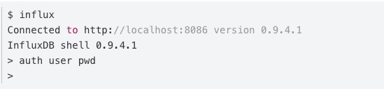

Influxdb 基础知识
一、ide工具：
InfluxDBWorkBench: https://github.com/JorgeMaker/InfluxDBWorkBench
InfluxdbStudio：https://github.com/CymaticLabs/InfluxDBStudio/releases/tag/v0.2.0-beta.1
工具：
bin路径：/usr/bin
- influxd # influxdb服务器
- influx # influxdb命令行客户端
- influx_inspect # 查看工具
- influx_stress # 压力测试工具
- influx_tsm # 数据库转换工具（将数据库从b1或bz1格式转换为tsm1格式）
数据路径：/var/lib/influxdb/
- data # 存放最终存储的数据，文件以.tsm结尾
- meta # 存放数据库元数据
- wal # 存放预写日志文件
二、基本结构：
第一部分：“cpu_load_short,host=server01,region=us-west”
第一部分称为key，key中包含了measurement name（类似表）和tags（tags又分为tag key和tag value，tags可以有多个）
注意：在tag value中的空格应以“\”加上空格表示，tags中的值必须是string类型，其实是起到索引的作用
第二部分：“value=0.64,value2=0.86”
第二部分称为Field，同样和tags的形式相同，都是键值对的形式，
但是tags中的值必须是string类型，而Field中的值可以为Integer、float、Boolean、string类型，
若为Integer类型，则值后必须加“i”，否则该值为float类型，
比如value=23意味着这个值23是float类型，
而value=23i，意味着值23是Integer类型。
Boolean类型的值的表示方式有很多，直接写成：t, T, true, TRUE, f, F, false或 FALSE都可以。
第三部分（可选）：“1434055562000000000”
第三部分称为Timestamp，是时间戳，如果该部分省略，则默认将当前时间的时间戳插入数据库，否则按照用户输入的时间戳插入。
三、身份验证与授权
InfluxDB的HTTP API和CLI（command line interface），
通过简单的基于证书的内建权限控制，使用API连接数据库。
启动身份验证后，http请求只有加入证书才能被接受。
默认情况下，在配置文件中，身份验证是关闭的。
可以通过设置 [http] 中的 auth-enabled=true 来开启
第一种方式：
启动控制台后，再设置用户 auth ：

第二种方式:
以用户名密码启动：influx -username root -password 123456
四、用户类型及其权限：
1. 管理员
所有管理员有所有数据库的读写权限，并且可以执行以下所有的管理类查询语句:
- 数据库管理:
- CREATE DATABASE, 和 DROP DATABASE
- DROP SERIES 和 DROP MEASUREMENT
- CREATE RETENTION POLICY, ALTER RETENTION POLICY, 和 DROP RETENTION POLICY
- CREATE CONTINUOUS QUERY 和 DROP CONTINUOUS QUERY
- 用户管理：
- Admin user management:
CREATE USER, GRANT ALL PRIVILEGES, REVOKE ALL PRIVILEGES, 和 SHOW USERS - Non-admin user management:
CREATE USER, GRANT [READ,WRITE,ALL], REVOKE [READ,WRITE,ALL], 和 SHOW GRANTS - General user management:
SET PASSWORD 和 DROP USER
- Admin user management:
2. 非管理员用户
非管理员用户可以赋一种权限:
- READ
- WRITE
- ALL (READ 和 WRITE )
这三种情况可以赋给每个用户，每个数据库。
五、用户管理命令
- 管理员用户管理
创建一个新的管理员用户：CREATE USER <username> WITH PASSWORD '<password>' WITH ALL PRIVILEGES
为一个已有用户授权管理员权限：GRANT ALL PRIVILEGES TO <username>
取消用户权限：REVOKE ALL PRIVILEGES FROM <username>
展示用户及其权限：SHOW USERS
- 非管理员用户管理
创建一个新的普通用户:CREATE USER <username> WITH PASSWORD '<password>'
为一个已有用户授权:GRANT [READ,WRITE,ALL] ON <database_name> TO <username>
取消权限:REVOKE [READ,WRITE,ALL] ON <database_name> FROM <username>
展示用户在不同数据库上的权限:SHOW GRANTS FOR <user_name>
- 普通用户账号功能管理
重设密码：SET PASSWORD FOR <username> = '<password>'
删除用户：DROP USER <username>